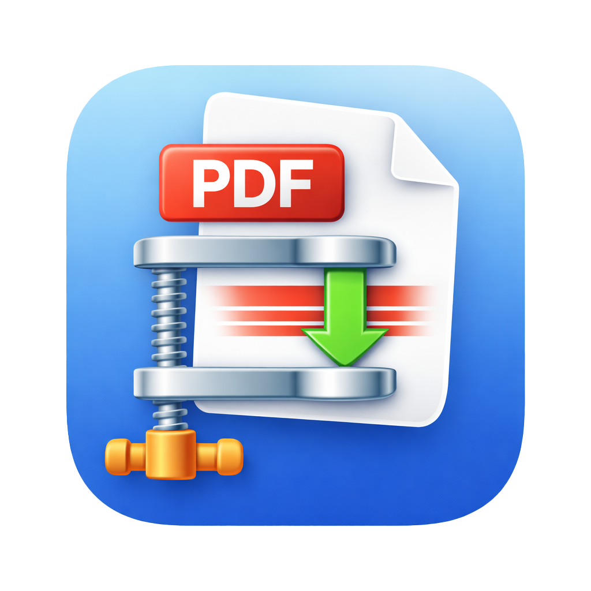

Contact
Need help?
If you need support with ShrinkPDF, email:
Please include your macOS or iOS version, the PDF you were working with, and a short description of the problem.

Help for compressing PDFs on macOS, choosing output settings, and resolving common file access issues.
If you need support with ShrinkPDF, email:
Please include your macOS or iOS version, the PDF you were working with, and a short description of the problem.
Compress PDFs.On macOS, ShrinkPDF needs access to files you select and the output folder you choose. If saving fails:
Some PDFs already contain optimized text and vector content. In those cases, ShrinkPDF may preserve the original file or reduce size only slightly. Image-heavy scanned PDFs usually compress more.